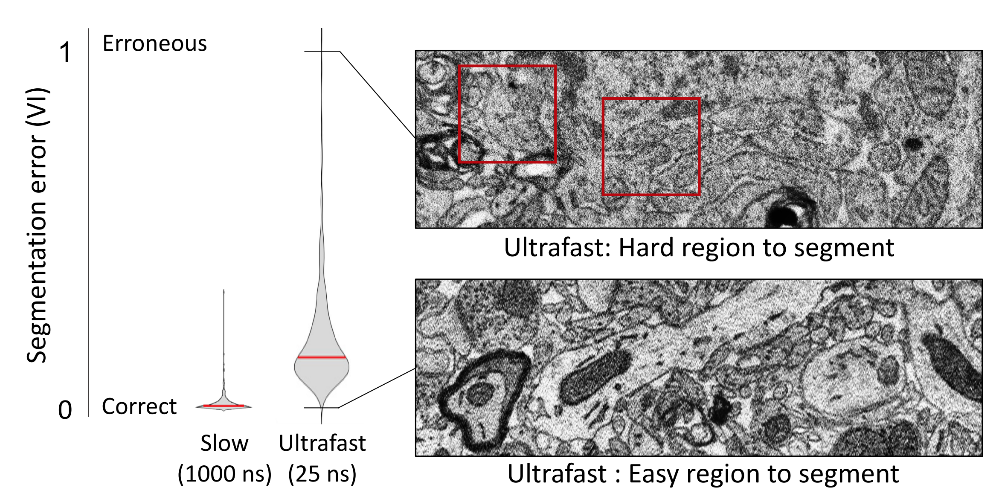
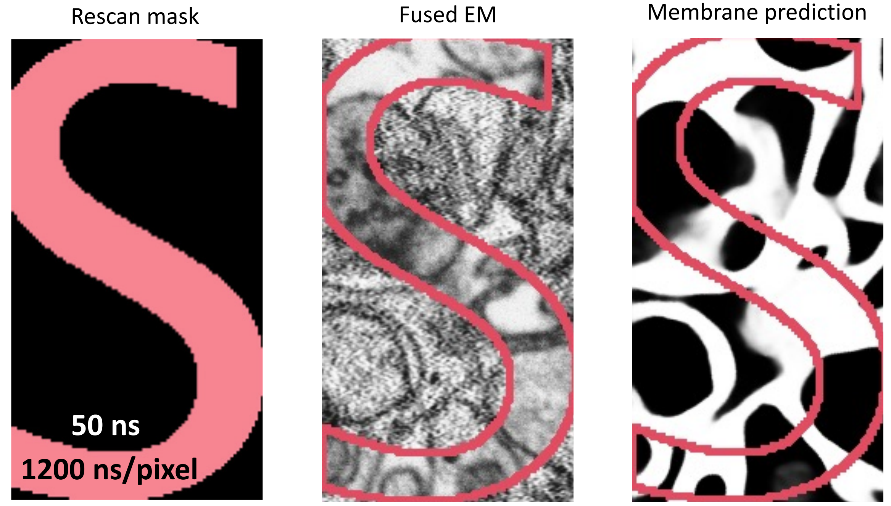
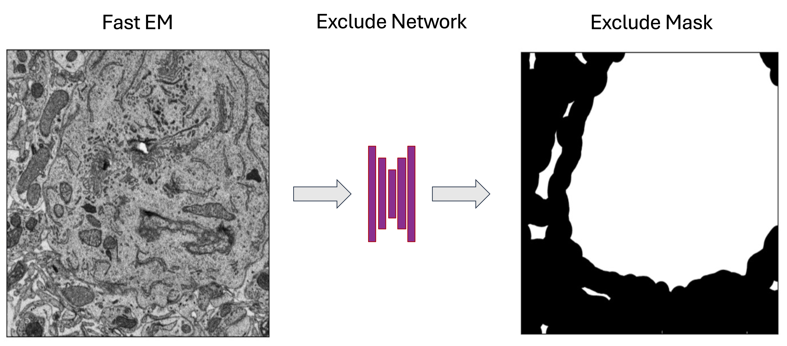
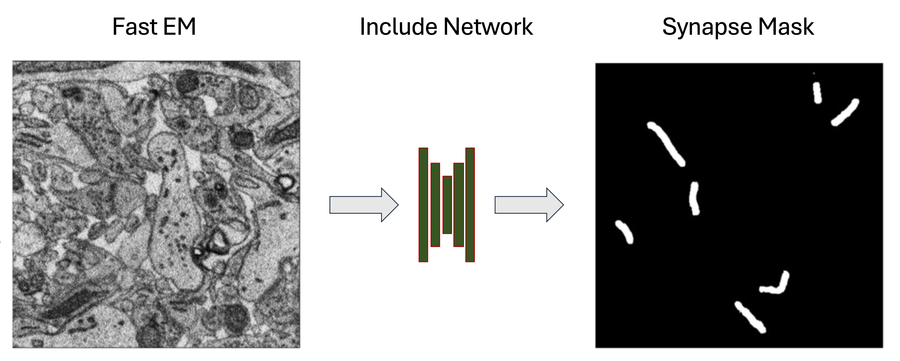

https://bit.ly/IshaanChandokSamuelLab
Rapid and Cost‐effective Connectomics
with Intelligent Image Acquisition, Reconstruction, and Querying
Yaron Meirovitch
1,
Core Francisco Park
1,
Lu Mi
2,
Ishaan Chandok
1,
Pavel Potocek
3,
Shashata Sawmya
2,
Yicong Li
1,
Yuelong Wu
1,
Daniel Berger
1,
Richard Schalek
1,
Hanspeter Pfister
1,
Remco Schoenmakers
2,
Maurice Peemen
2
,
Jeff W. Lichtman
1,
Aravinthan D.T. Samuel
1,
Nir Shavit
2
1 Harvard, 2 MIT, 3 Thermofisher
Connectomics

Mouse Visual Cortex
Karlupia et al. (2023)
Mouse Visual Cortex

Mouse Visual Cortex
Scanning Electron Microscopes
1 cubic millimeter
↓
4 nm × 4 nm × 30 nm per voxel
↓
2,000,000,000,000,000 pixels

1 µs / pixel
↓
60 years

61 beams
↓
1 year
Fast, noisy images → lower segmentation quality

Segmentation accuracy varies spatially
An ML-trained "Error Network" generates bounding boxes around error-prone regions

The microscope rescans any specified sub-region

EM2MB can process images with non-homogeneous dwell times

Networks can be trained to exclude certain ROIs
Networks can be trained to include certain ROIs
Fused images can be made to look like long scan images

SmartEM accelerates acquisition by 7-fold
without changing information content
The "smart" average pixel dwell time that renders the same information as traditionally fixed dwell times
SmartEM accelerates acquisition by 7-fold
"Smart" average pixel dwell time that renders the
same information as traditionally fixed dwell time
\[ t_{smart}=t_{initial} + \alpha t_{rescan} \]
$ t_{smart}$.... smart time
$ \alpha$.... rescan rate
$ t_{initial}$.... initial dwell time
$ t_{rescan}$.... rescan dwell time
Mouse Visual Cortex Imaged with SmartEM
Initial Dwell Time ($t_{initial}$): 99 ns/pixel
Rescan Rate ($\alpha$): 3%
Rescan Dwell Time ($t_{rescan}$): 800 ns
Mouse Visual Cortex Imaged with SmartEM
Initial Dwell Time ($t_{initial}$): 99 ns/pixel
Rescan Rate ($\alpha$): 3%
Rescan Dwell Time ($t_{rescan}$): 800 ns
3D Segmentation from SmartEM


Yaron Meirovitch
Harvard/MIT

Core Park
Harvard

Ishaan Chandok
Harvard

Pavel Potocek
Maurice Peemen
Richard Schalek
Lu Mi
Jeff Lichtman
Nir Shavit
Hanspeter Pfister
Shashata Sawmya
Yicong Li